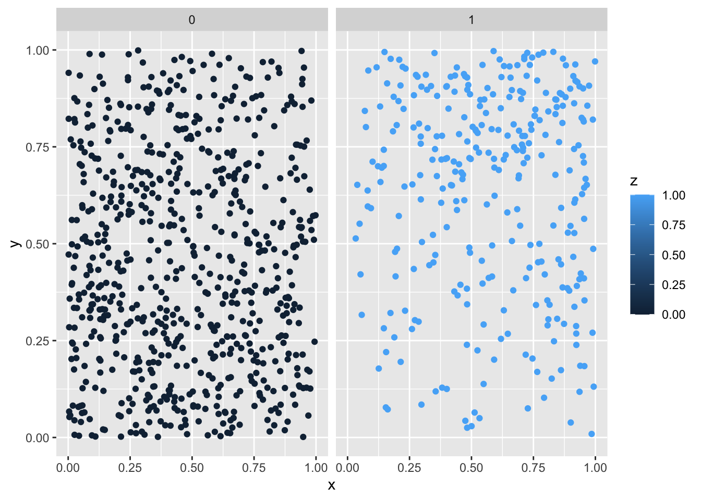
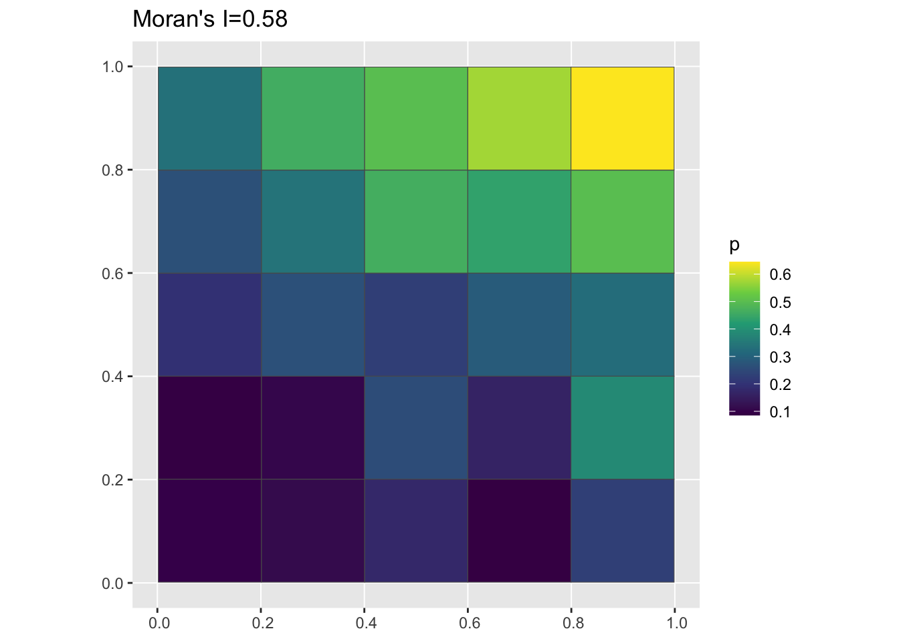
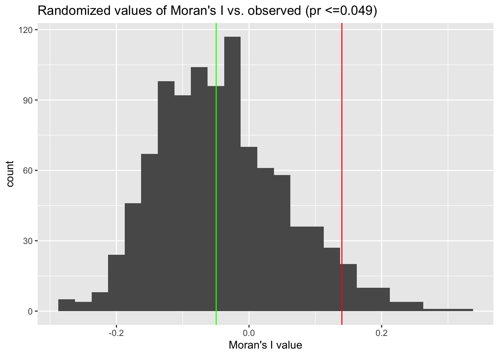

Coming to grips wih complete spatial randomness
Introduction
The point of this tutorial is to introduce you to two key, but related, concepts in spatial analysis:
Aggregating data from points to grid cells or polygons. This is often done to create summaries of an outcome of interest over small areas.
Calculating a summary statistic from the aggregated data and comparing the observed distribution to one exhibiting complete spatial randomness.
To try this tutorial on your own, download and unzip this zipfile and open up your R or RStudio session in the resulting directory. You can then either render the entire document or work through it one code cell at a time.
Set up the environment
knitr::opts_chunk$set(message = FALSE, warning=FALSE, tidy=TRUE)
library(ggplot2)
library(sf)
library(dplyr)
library(spdep)Generate some data
This function will generate n points which are scattered uniformly at random around a unit square (i.e. a square with an area of one). The parameter base_p controls the baseline probability of the outcome of interest - e.g. the presence of a disease - occurring at the bottom left corner of the square,i.e. where x = 0, and y = 0. The parameters or_x and or_y are odds ratios representing the increase in the probability of having the outcome z=1 as you move rightwards (from x = 0 to x = 1) and upwards (from y = 0 to y = 1) respectively.
clusteredOutcomeData <- function(base_p = 0.1, or_x = 10, or_y = 10, n = 1000) {
df <- data.frame(x = runif(n), y = runif(n))
pt_logit <- qlogis(base_p) + log(or_x) * df$x + log(or_y) * df$y
pt_p <- plogis(pt_logit)
df$z <- rbinom(nrow(df), 1, pt_p)
return(df)
}When the values of both of these parameters are high, the probability of having a positive case should be greatest in the top-right corner of the square. Lets take a look and see if this is the case:
df <- clusteredOutcomeData(0.01, 10, 10, 1000)
g <- ggplot(df, aes(x = x, y = y)) + geom_point(aes(colour = z)) + facet_wrap(~z)
plot(g)
In this setup the risk of being a case is clearly higher in the top-right vs. the left. In the next section, we’ll work on aggregating these data up to a grid cell and calculating a descriptive spatial statistic, in this case Moran’s I.
Play with the values of base_p, or_x and or_y above to get a feel for how these parameters impact the spatial patterning of the outcome.
Aggregating from Points to Grid Cells
The function below takes a data frame with columns x, y and z with values representing the x,y coordinates and disease outcome, respectively, assigns points to grid cells, and then counts up the proportion of individuals in each cell are a case. It then returns an sf data frame we can use for plotting:
pointToGrid <- function(df, n = 5) {
g <- st_as_sf(df, coords = c("x", "y"))
a <- st_make_grid(g, what = "polygons", n = n) %>%
st_sf
a$cell <- 1:nrow(a)
pp <- st_join(g, a, st_intersects)
z_grid <- as_tibble(pp) %>%
group_by(cell) %>%
summarize(n = sum(z), p = sum(z)/n())
aa <- left_join(a, z_grid)
return(aa)
}Calculating Moran’s I
The function below will calculate Moran’s I for a given grid. For more information on this function, please see this tutorial where it is described in more detail:
moranFromSF <- function(x, sfdf, style = "B") {
nb <- poly2nb(sfdf)
lw <- nb2listw(nb, style = style, zero.policy = TRUE)
mi <- moran(x, lw, length(nb), Szero(lw), NAOK = TRUE)$I
return(mi)
}Plotting
The code below uses the function we just defined to aggregate the data we generated above to a 5 x 5 grid, plot the proportion cases vs. controls in each grid cell, and label the plot with the estimated value of Moran’s I:
pg <- pointToGrid(df, n = 5)
data_mi <- round(moranFromSF(pg$p, pg), 2)
g <- ggplot(pg) + geom_sf(aes(fill = p)) + scale_fill_viridis_c() + ggtitle(paste0("Moran's I=",
data_mi))
plot(g)
The parameter n in the function above controls the number of cells in each direction, so n=5 will result in \(n^2 = 25\) cells, n=10 will result in 100 cells, etc. Try different values of n and see how they impact the visual pattern of the grid as well as the value of Moran’s I. Note that grayed out cells are those with NA values, i.e. ones where there are no points (cases or controls) present.
Permutation testing
This function just takes the input data and shuffles the values of the case/control outcome so that they no longer have a spatial pattern:
randomizeOutcome <- function(df) {
new_df <- df
new_df$z <- sample(df$z, size = nrow(df), replace = FALSE)
return(new_df)
}When we plot the randomized data, we can see now that the strong clustering pattern at the beginning has been disrupted:
random_df <- randomizeOutcome(df)
g <- ggplot(random_df, aes(x = x, y = y)) + geom_point(aes(colour = z)) + facet_wrap(~z)
plot(g)
And we can use the functions we defined earlier to aggregate up from the randomized data to grid cells, calculate Moran’s I, and plot:
pg <- pointToGrid(random_df)
mi <- round(moranFromSF(pg$p, pg), 2)
g <- ggplot(pg) + geom_sf(aes(fill = p)) + scale_fill_viridis_c() + ggtitle(paste0("Moran's I=",
mi))
plot(g)
Permuting the data
Here‚Äôs where the rubber meets the road üõ£. We will repeat the randomization above a large number of times (careful, as the number of trials increases, so does the runtime), save the value of Moran‚Äôs I for each randomized dataset, and then compare the randomized values to the ‚Äòtrue‚Äô one.
n_trials <- 500
mi_vals <- rep(0, n_trials)
for (i in 1:n_trials) {
random_df <- randomizeOutcome(df)
pg <- pointToGrid(random_df)
mi_vals[i] <- moranFromSF(pg$p, pg)
}Comparing randomized data to observed data
Let’s re-generate the clustered data from before and then compare it to some randomized values:
df <- clusteredOutcomeData(0.01, 10, 10, 1000)
pg <- pointToGrid(df)
data_mi <- round(moranFromSF(pg$p, pg), 2)
p <- sum(mi_vals >= data_mi)/length(mi_vals)
g <- ggplot() + geom_histogram(aes(x = mi_vals), bins = 50) + xlab("Moran's I value") +
geom_vline(xintercept = data_mi, colour = "red") + geom_vline(xintercept = median(mi_vals),
colour = "green") + ggtitle(paste0("Randomized values of Moran's I vs. observed (pr <=",
p, ")"))
plot(g)
Modify the values of or_x and or_y to make the clustering in the simulated data weaker (i.e. make these paramters smaller). You can also reduce the total number of points (n) to see how easy it is to distinguish between ‘true’ clustering and random noise using a smaller dataset.
Citation
@online{zelner2023,
author = {Jon Zelner},
title = {Coming to Grips Wih Complete Spatial Randomness},
date = {2023-03-09},
url = {https://zelnotes.io/posts/csr},
langid = {en}
}